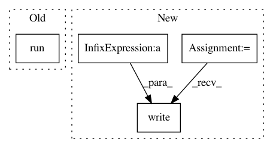

5041068ea241f946217690aee63942261911b42d,tasks.py,,build_docs,#Any#,33
Before Change
"url=./master/index.html\\" />\" > _build/html/index.html")
for ref in refs:
c.run("echo _build/html/{}/index.html ".format(ref)
+ ">> _build/html/versions.html")
c.run("git checkout gh-pages")
dir_contents = os.listdir()
After Change
all_refs = c.run("git tag --list", hide="out").stdout.split("\n")
all_refs = [tag for tag in all_refs if tag]
all_refs = ALLOWED_BRANCHES + sorted(all_refs)
if head_name == "master":
refs = [r for r in all_refs] // copy all_refs
else:
refs = [head_name]
with c.cd("./docs/"):
c.run("mkdir -p _static _templates")
c.run("make clean", hide="out")
build_dirs = []
for ref in refs:
c.run("git checkout " + ref)
b_dir = "_build/html/{}".format(ref)
build_dirs += b_dir
version_str = ref
release_str = ref
c.run("QUCUMBER_VERSION={}; ".format(version_str)
+ "QUCUMBER_RELEASE={}; ".format(release_str)
+ "sphinx-build -b html ./ {} -aT".format(b_dir))
if head_name == "master":
c.run("touch _build/html/.nojekyll")
c.run("mv _templates/index.html _build/html/index.html")
with open("_build/html/versions.html", "wb") as f:
f.write(versions_template.render(refs=refs))
c.run("git checkout gh-pages")
dir_contents = os.listdir()
In pattern: SUPERPATTERN
Frequency: 3
Non-data size: 4
Instances
Project Name: PIQuIL/QuCumber
Commit Name: 5041068ea241f946217690aee63942261911b42d
Time: 2018-08-07
Author: emerali@users.noreply.github.com
File Name: tasks.py
Class Name:
Method Name: build_docs
Project Name: tensorflow/tensorboard
Commit Name: d586c7454fb1bf0bcf2a6866e09d6f6a9774f666
Time: 2018-06-20
Author: jart@google.com
File Name: tensorboard/main.py
Class Name:
Method Name: run_main
Project Name: HyperGAN/HyperGAN
Commit Name: 5a69007e1ab2f4c0b4a549c0a2a8cd9701fd8929
Time: 2017-06-28
Author: mikkel@255bits.com
File Name: examples/colorizer.py
Class Name:
Method Name: search